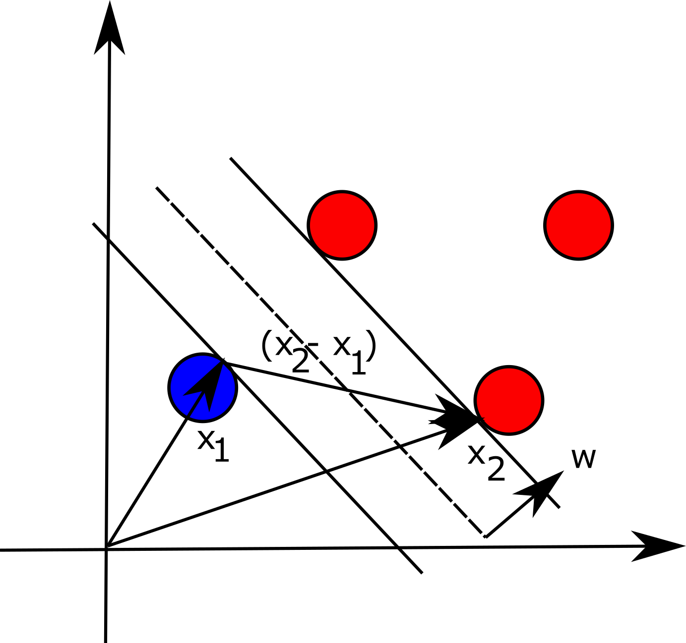

Mathematics behind Support Vector Machine
Support vector machine is a powerful tool, and we believe that
every data scientist needs to know the internals of this machine
learning algorithm. We are going to discuss the idea behind this
classification algorithm in the proceeding paragraphs.
Given a hyperplane wx+b=0 we can define two
additional hyperplanes that are parallel to and equidistant from
the given one. Namely, wx+b=1 and
wx+b=-1. If we say that we have a set of points
(x_i, y_i) where y_i
is either one or negative one (depending on the class to which the
sample belongs), we state that the following must hold
y_i(wx+b)-1 \geq 0, with equality occurring
when points are exactly on the hyperplanes. We visualize the problem for the 2-D setting in the figure below:

Now if we take two datapoints, one on each hyperplane, parallel to and
equidistant to wx+b=0, x_1 and
x_2, the margin between these two points can be
expressed as follows (basically, the difference between the two vectors
projected onto unit vector w, which is perpendicular to hyperplane
that separates the points in different classes):
\frac{(x_2-x_1)\cdot w}{||w||}=\ \frac{2}{||w||}
According to SVM, the goal is to maximize this distance to reduce the classification
error. However, maximizing this expression is the same as minimizing the following:
\frac{1}{2}{||w||}^2
Since we are given constraints in a form yi(wx+b)-1≥0 we can use Lagrange multipliers
and construct the following equation:
L=\frac{1}{2}w^Tw-\sum_{i=1}^{n}{\alpha_i (y_i (wx_i+b)-1)}
To minimize this function, we need to find the partial derivatives with respect to
vector w and b:
\frac{\partial L}{\partial w}=w-\sum_{i=1}^{n}{\alpha_iy_ix_i}\ =\ 0
\frac{\partial L}{\partial b}=\sum_{i=1}^{n}{\alpha_iy_i}=0
If we now plug in the values for w into the original equation and
reduce it (here we also use the result for the second partial
derivative), we obtain (dual optimization problem):
L_D=\sum_{i=1}^{n}\alpha_i-\frac{1}{2}\sum_{i=1}^{n}\sum_{j=1}^{n}{\alpha_i\alpha_jy_iy_jx_ix_j}
s.t. \sum_{i=1}^{n}{\alpha_iy_i=0}
We can now solve this maximization problem using Quadratic Programming (QP) solver
and obtain Lagrange multipliers. Once this is done, we can find the vector w
and bias term b. For the last point, we can take a point
{(x_s,\ y}_s)\ on the hyperplane:
y_s(wx_s + b)=1\ \rightarrow\ b=\ y_s-wx_s=y_s-\sum_{i=1}^{n}{\alpha_iy_ix_i}x_s
The derivations that we have presented are good only for linearly separable samples,
however, one can use so called kernel trick to classify more complex datasets.